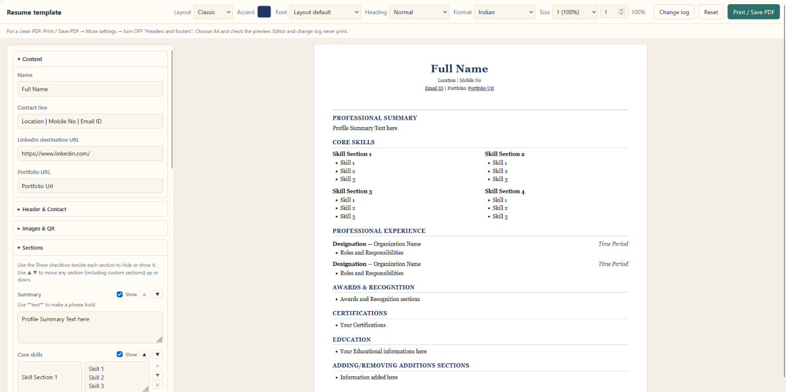
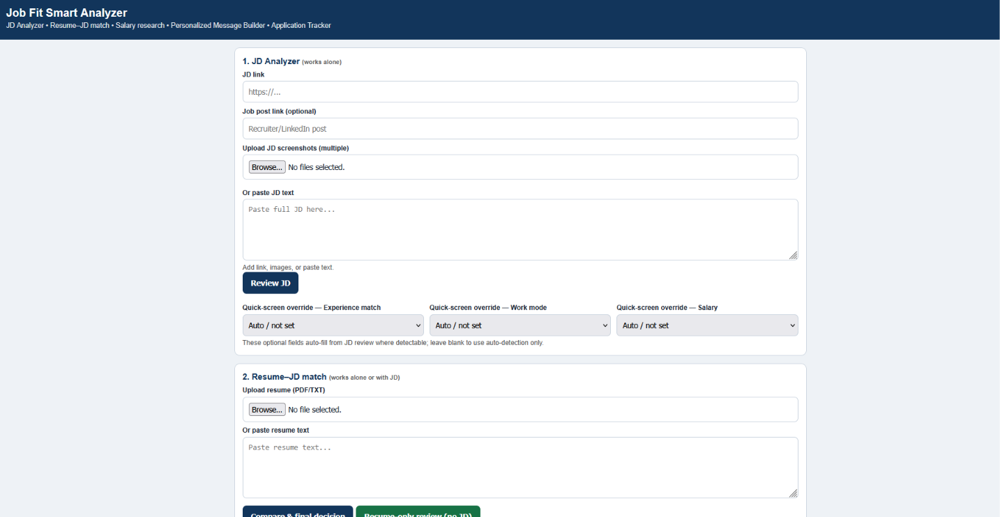

Working prototype
Resume Template Builder
A simple browser-based tool for creating and customising resumes with editable sections, clean templates, and a practical resume-building experience.

Region 04
A route for creating, experimenting, and turning small ideas into useful experiences.
Working prototype
A simple browser-based tool for creating and customising resumes with editable sections, clean templates, and a practical resume-building experience.

Working prototype
A personal tool for reviewing job descriptions, checking role fit, and preparing clear outreach messages for opportunities.

I build by combining my own ideas, guidance, and decisions with AI assistance. I use AI to help create code, scripts, and GitHub-hosted live sites from scratch.
Future routes may include tools that work well without an internet connection, useful utilities, and selected experiments.
Future updates may include feature improvements, testing notes, and selected experiments.